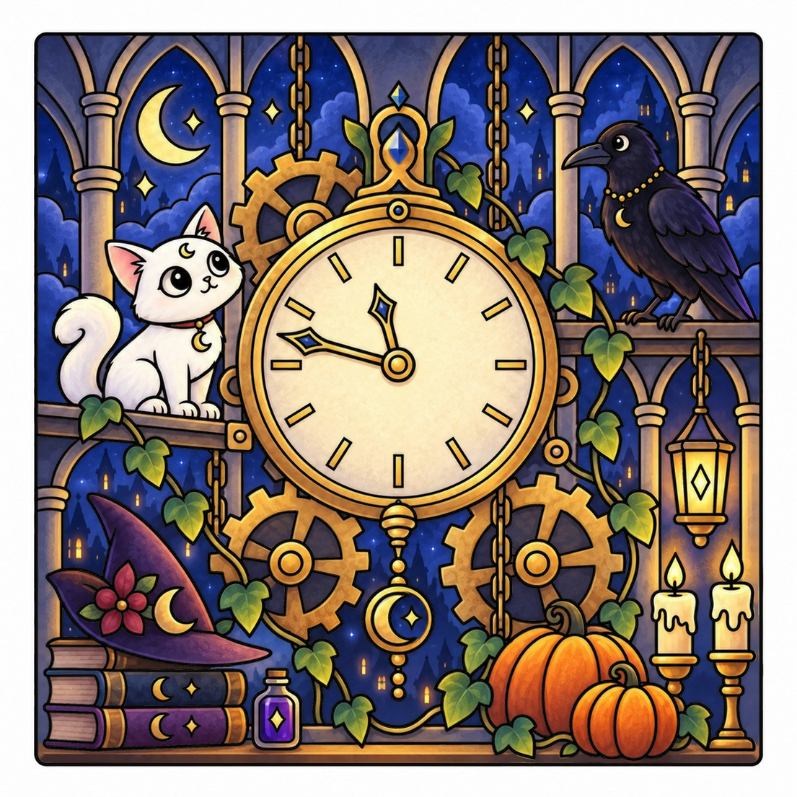
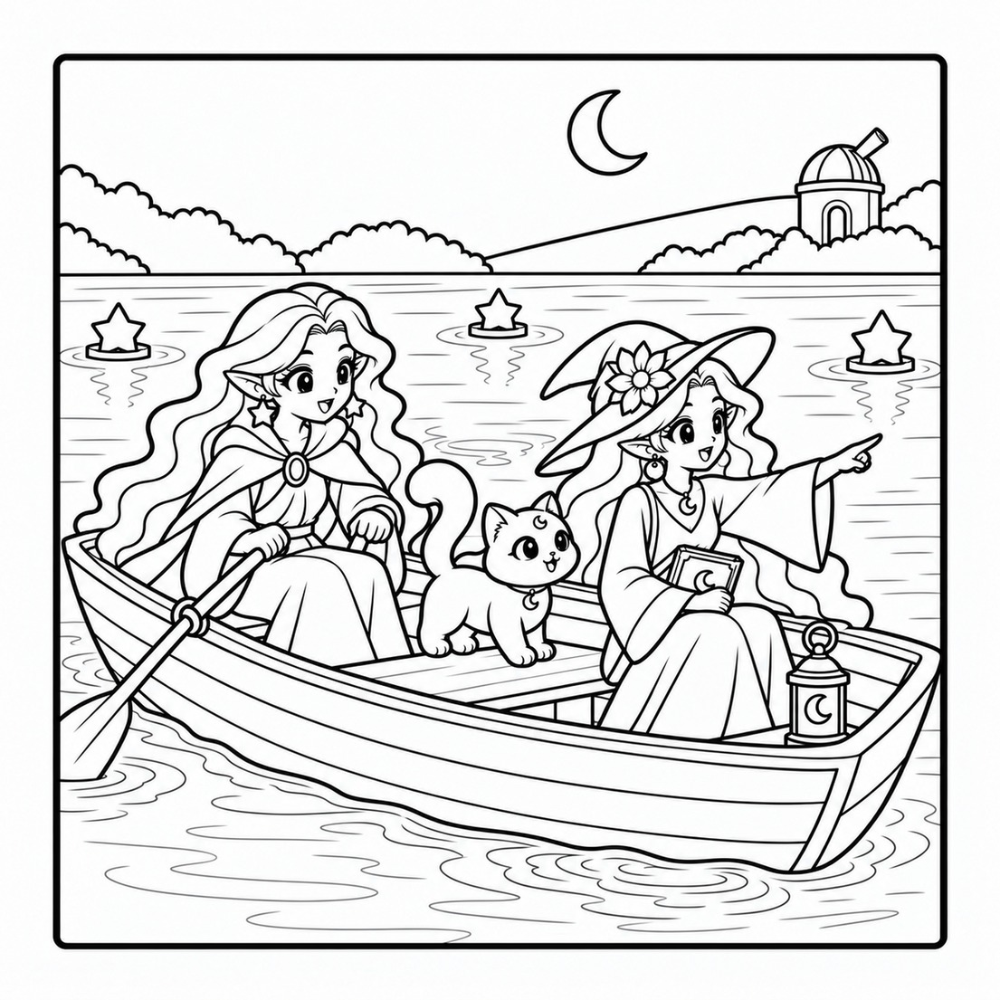
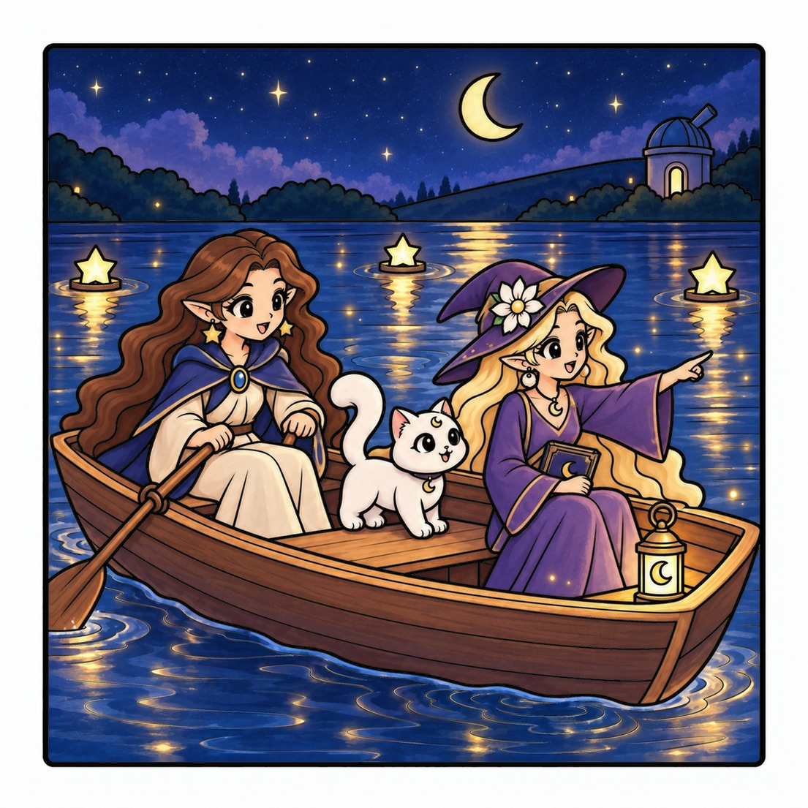

Treze minutos antes da meia-noite, o relógio de Nocturna para e o prisma do festival desaparece. A Luna, a Vega, o Mimo e o Nox seguem as pistas da torre do relógio ao lago das estrelas, para salvar a noite mágica.
Toca numa imagem para a ver em grande. Usa as setas ou desliza para mudar.
Dá vida às tuas páginas
Exemplos de pintura: a mesma página do livro, antes e depois de colorida. O livro traz as páginas a preto e branco.
Página original

Exemplo de pintura

Página original

Exemplo de pintura
Descobre a história
Aventuras spooky-cute cheias de charme.
Midnight Magic
O relógio parou e a aventura começou. Treze minutos antes da meia-noite, o relógio de Nocturna para e o prisma do festival desaparece. A Luna, a Vega, o gato Mimo e o corvo Nox seguem as pistas pela torre do relógio, pela biblioteca da lua e pelo mercado das lanternas, atravessam a estufa de vidro e o salão dos espelhos e das máscaras, e reman de barco pelo lago das estrelas até ao observatório. Ao amanhecer, a festa de Nocturna pode finalmente começar.
São 51 ilustrações detalhadas para colorir, com verso em branco em cada cena. A história completa num só livro.
Esta noite há festa na casa assombrada, mas a lanterna da lua desapareceu. Junta-te ao fantasma Milo, à gata Nova e à abóbora Pip e segue as pistas da biblioteca até à torre do relógio, a caminho de uma festa mágica de Halloween.
Um desfile alegre de fatos, abóboras sorridentes, doces e amigos spooky-cute atravessa a rua. São 32 ilustrações divertidas, com espaços grandes para colorir e verso em branco.
A gentileza ilumina o caminho: o Brambleboo entrega a última lanterna e descobre como a amizade o leva de volta a casa. Vinte cenas para colorir, mais atividades.
Uma noite de hanbok à porta do palácio, um táxi para casa depois de beber demais e uma confissão à chuva. São 36 cenas originais de K-drama em traço fino, até ao último comboio para casa.